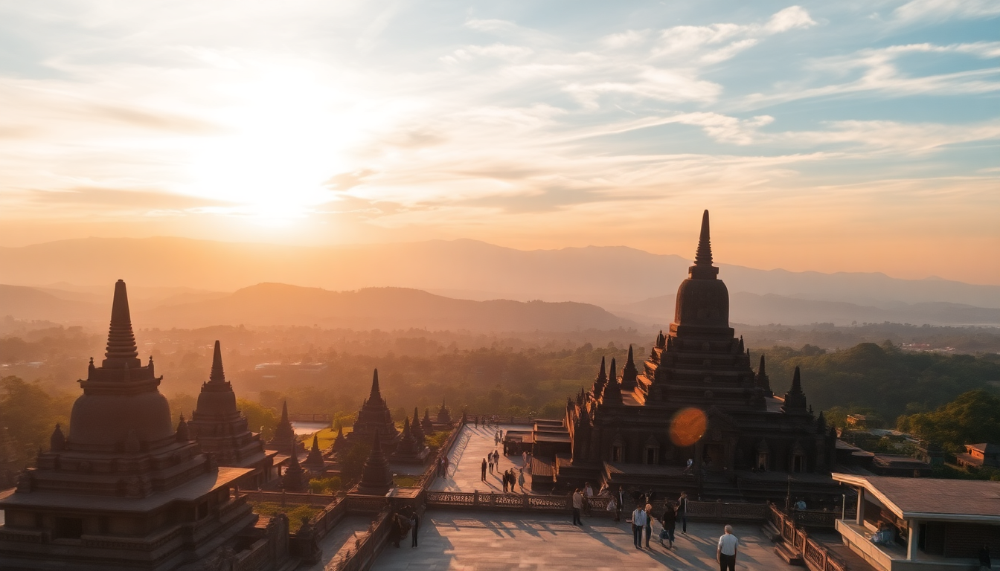

Best Day Trips from Yogyakarta: Borobudur, Prambanan & Merapi

I spent a week based in Yogyakarta, and every morning I had the same problem: too many incredible day trips, not enough time. The city sits at the center of a triangle of heavyweights—Borobudur, Prambanan, and Mount Merapi—each less than two hours away. Here’s how I navigated the logistics, the crowds, and the heat, so you don’t have to.
How do I visit Borobudur without the sunrise chaos?
Sunrise at Borobudur is the Instagram dream, but it’s also a logistical nightmare. The official sunrise tour (managed by the temple authority, not third parties) lets you enter at 4:30 AM, but you’re herded in groups of 20, and you cannot climb to the top stupas—you watch from a lower terrace. I skipped it.
Instead, I arrived at 7:00 AM, right when the gates open for general entry. The crowd was thin, the light was already good, and I had the upper levels almost to myself until 9:00 AM. Buy your ticket online at least a day ahead—the 500,000 IDR (~$32) foreigner ticket includes access to the main structure, but the 750,000 IDR “structure access” ticket (needed to climb to the top) sells out fast.
- Hotel Manohara is the only accommodation inside the Borobudur complex. I didn’t stay there, but it’s the best option if you want sunrise without the 4:00 AM drive from Yogyakarta.
- Plataran Borobudur is a five-minute drive away—more luxurious, but you’ll still need the official sunrise ticket.
- Candi Pawon and Candi Mendut are two smaller temples on the road to Borobudur. Free to enter, rarely crowded, and worth a 15-minute stop each.
Is Prambanan better in the morning or afternoon?
Prambanan gets punishingly hot by 11:00 AM. The stone floors radiate heat, and there’s almost no shade between the main temples. I went at 2:00 PM (bad idea) and regretted it. Go at 7:00 AM.
The complex is smaller than Borobudur—you can see all six main temples in 90 minutes. The Trimurti shrines (Shiva, Vishnu, Brahma) are the centerpieces, but don’t skip the Candi Sewu compound, a 15-minute walk east. It’s a Buddhist temple complex with 249 smaller shrines, and it was nearly empty when I visited.
- Ramayana Ballet happens at the open-air theater inside Prambanan every night except Monday. The 7:30 PM show costs 350,000 IDR (~$22). Skip the dinner package—the food is mediocre, and you can eat at Warung Makan Bu Wiryo in Prambanan village instead.
- Hotel Grand Manis is a budget option 10 minutes from the temple. Basic, but clean, and they arrange free shuttle to the complex.
Can I combine Borobudur and Prambanan in one day?
Yes, but it’s a long day, and you’ll be tired. I did it, and here’s the formula: start Borobudur at 7:00 AM, finish by 10:00 AM, drive 90 minutes to Prambanan, arrive by 11:30 AM, tour until 1:30 PM, then eat lunch in Prambanan village. That leaves you back in Yogyakarta by 3:00 PM.
The catch: you’ll be at Prambanan during peak heat. If you’re okay with that (and bring a hat and water), it’s doable. Hire a private driver for the day—I paid 600,000 IDR (~$38) including fuel and waiting time. Go-Jek and Grab also offer car hires, but drivers won’t wait more than two hours at each site.
- ViaVia Jogja in the Prawirotaman neighborhood organizes combo tours for 1,200,000 IDR (~$76) per person, including transport and guide. It’s pricier than DIY, but the guide adds context you won’t get from a signboard.
- Taman Sari Water Castle in Yogyakarta is a good stop if you finish Prambanan early. It’s a 20-minute drive from the city center.
What’s the best way to see Mount Merapi?
Mount Merapi is active—it erupted in 2023—so check the official status (usually Level II or III) before booking any tour. The standard “Merapi Jeep Tour” is a two-hour ride through the volcanic sand and rubble of the 2010 eruption. It’s touristy, but I found it genuinely interesting.
The jeep tour starts in Kaliurang, a hill town 25 kilometers north of Yogyakarta. You’ll drive through Kinahrejo Village, which was destroyed in 2010, and stop at the Alas Welahan Bunker—a concrete shelter that was buried by pyroclastic flow. The bunker is eerie, and the guides are locals who lost family in the eruption. That part is not touristy at all.
- Merapi Museum in Kaliurang is free and has good English explanations of the 2010 eruption. Spend 30 minutes here before the jeep tour.
- The Lost World is a lava stone park near the base—skip it. It’s a photo spot with fake dinosaurs.
- Villa Merapi is a guesthouse in Kaliurang with volcano views from the garden. I didn’t stay, but I ate lunch there—the nasi goreng was solid.
How do I get around without a car?
I never drove in Indonesia, and you shouldn’t either unless you’re very comfortable with chaotic traffic. The best options for day trips:
- Private driver: The most flexible. I used Jogja Transfers (book via WhatsApp) for 500,000 IDR per half-day. They speak basic English and know the temple opening hours.
- TransJogja bus: Bus 2A goes from the city center to Jombor Terminal, where you can catch a minibus to Borobudur. Cheap (3,500 IDR per ride), but slow—figure 2.5 hours each way.
- Tourist shuttle: DahJogja operates a hop-on-hop-off bus to Borobudur and Prambanan. It leaves from Malioboro Street every hour. I tried it once—the bus was late, and the air conditioning was weak. I wouldn’t rely on it for a tight schedule.
- Go-Jek motorbike: Good for short trips in the city (e.g., from Prawirotaman to Malioboro), but not for temple visits. You’ll arrive sweaty.
- Train: No direct train to Borobudur or Prambanan. The nearest station for Prambanan is Brambanan Station, but it’s a 20-minute walk from the temple entrance.
What should I eat near these temples?
Temple-area food is mostly warungs serving nasi goreng and mie goreng for 20,000-30,000 IDR (~$1.30-$2). It’s fine, but nothing special. For real local food, you need to go where the drivers eat.
Near Borobudur, I found Warung Makan Bu Wiji on Jalan Borobudur. It’s a no-frills place with ayam goreng (fried chicken) and tempeh for 25,000 IDR. The sambal is dangerously spicy—I learned that the hard way.
Near Prambanan, Soto Kudus Mbak Sari serves a clean, chicken-based soto soup with rice. It’s 15,000 IDR and was the best meal I had on temple days.
Back in Yogyakarta, Bale Raos in the Royal Ambarrukmo complex does gudeg (jackfruit stew) the way Jogja locals eat it—sweet, heavy, and served with chicken and egg. It’s not cheap (60,000 IDR), but it’s the real version, not the tourist version.
When should I avoid visiting?
Avoid the main temples during Idul Fitri (dates change yearly) and Chinese New Year. Domestic tourism spikes massively—I heard from a driver that Borobudur saw 30,000 visitors in a single day during Idul Fitri 2023. The temple authority caps daily visitors at 1,200 for the structure-access ticket, but the general grounds get packed.
Also skip Monday mornings at Prambanan—the Ramayana Ballet stage is being cleaned, and some paths are blocked.
The dry season (April to October) is the best window. I went in June, and it rained exactly once, for 20 minutes. November to March is wetter, but the temples are less crowded, and the rice fields around Borobudur are brilliant green.
FAQ
Is Borobudur worth the high foreigner ticket price? Yes, but only if you buy the structure-access ticket (750,000 IDR) and arrive early. The standard ticket (500,000 IDR) only lets you walk around the base, and you’ll feel like you missed the main event. I paid the higher price and thought it was fair—the maintenance and restoration work is constant, and the funds go back to the site.
Can I climb Merapi without a tour? No, and you shouldn’t try. The volcano is active, and local guides are mandatory for any hike above the Kaliurang base. The standard jeep tour is the safest option. If you want a real hike, book a sunrise trek (departing 2:00 AM) through Alam Adventure—they provide helmets and masks, and the guides check the volcano status daily.
How much time should I budget for each temple? Borobudur: 2-3 hours if you climb to the top. Prambanan: 1.5-2 hours if you include Candi Sewu. Merapi jeep tour: 2 hours for the ride, plus 1 hour at the museum. Add 30-45 minutes of travel time between each location.
Conclusion
- Start Borobudur at 7:00 AM, Prambanan at 7:00 AM, and Merapi at 9:00 AM to avoid heat and crowds.
- Hire a private driver for 500,000-600,000 IDR per half-day—it’s cheaper and more flexible than any tour package.
- Eat at local warungs near the temples, not at the tourist restaurants inside the complexes.
- Check Merapi’s activity status before booking any volcano tour—the official BPPTKG website updates daily.
- Skip the sunrise tours at Borobudur unless you’re okay with restricted access and group herding.